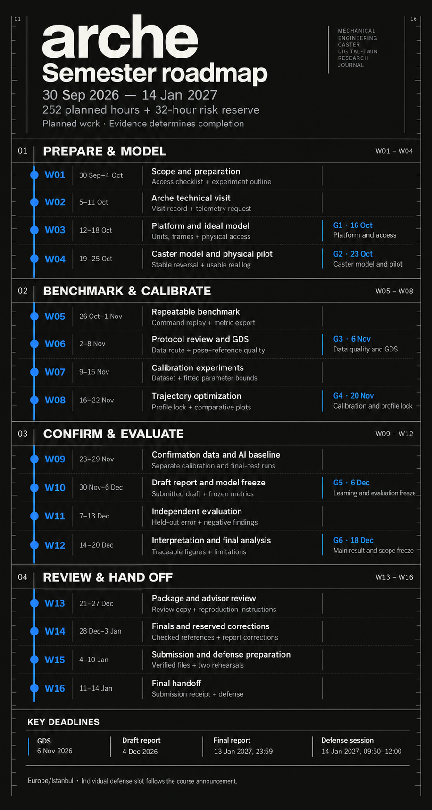

06 / ROADMAP
30 September 2026 to 14 January 2027. The budget is 252 planned hours plus a 32-hour risk reserve. These are estimates, not logged working hours.
On smaller screens, scroll the map sideways or open the full-size image.

Scroll horizontally to see the remaining columns.
| Week | Period | Deliverable / acceptance criteria | Planned hours | Task |
|---|
All times use Europe/Istanbul. The individual defence slot depends on the course announcement. Official calendar ↗